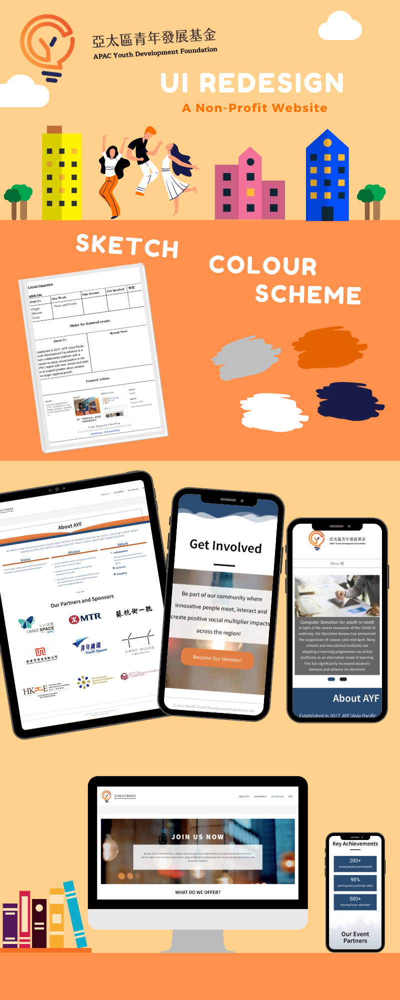

Redesigning a WordPress Site
Organisation: Asia Pacific Youth Development Foundation
Timeline: 1 month
Setting: WordPress environment with CMS system.
Layout guideline: Compelling, Modern and Clear.
My responsibility: Static design, Responsive design and Call-to-action input.
Objectives:
- To migrate the existing website for a clearer branding.
- Showing professional brand image so as to build up creditability.
- Engaging more potential partners/ members from the website.
